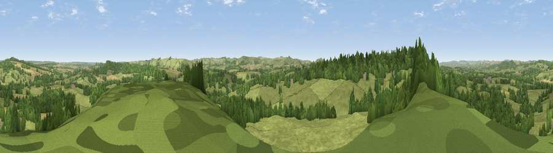

Barkers Hill
#23976 in England · top 39% of its area beats it · near Donhead St MaryThe view, rendered

A 360° render of this exact spot computed from the terrain model, tree cover and land cover — summer colours, afternoon light, calibrated against photographs of famous viewpoints. Real trees, hedges and buildings will differ in detail.
The panorama
Grey silhouette: terrain skyline in each direction (720 bearings, Earth curvature and refraction included). Dashed green: skyline with trees (+15 m) and buildings (+8 m) as obstacles. Blue strip: how far the ground is visible on each bearing.
Where the view opens
Wedge length = distance to the farthest visible ground on that bearing (vegetation-aware). Rings at 10, 25 and 50 km.
What fills the view
69% grassland · 24% woodland · 6% cropland ·
Angular shares of the visible panorama (visual magnitude), not map area. Landscape diversity 0.35 (0–1 Shannon).
Key numbers
More beautiful places nearby
The staircase of upgrades: each row has a higher view potential than everything closer. Driving times are estimates from straight-line distance, calibrated against real road routing — check an actual route before setting out.
| Place | Direction | Drive | Score |
|---|---|---|---|
| Viewpoint near Semley | W · 1 km | ~3 min | 57.0 |
| Little Hill | W · 4 km | ~9 min | 70.0 |
| Viewpoint near Berwick St John | SSE · 5 km | ~12 min | 78.2 |
| Viewpoint near Kimmeridge | S · 44 km | ~64 min | 82.9 |
| Viewpoint near Kimmeridge | S · 44 km | ~64 min | 84.1 |
| Whiteway Hill | S · 45 km | ~65 min | 85.0 |
| Rings Hill | S · 45 km | ~66 min | 87.5 |
| Viewpoint near Abbotsbury | SW · 52 km | ~74 min | 89.0 |
51.02991, -2.13578 · source: dobih hill · position refined by local search. Computed location — check access rights before visiting.